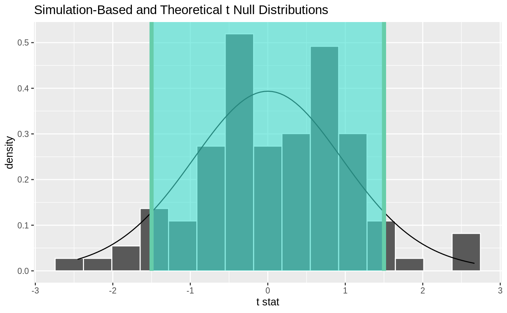
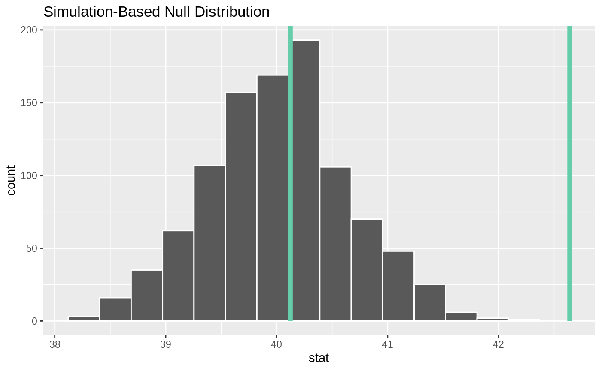

R/shade_confidence_interval.R
shade_confidence_interval.Rdshade_confidence_interval() plots confidence interval region on top of the
visualize() output. It should be used as \ggplot2\ layer function (see
examples). shade_ci() is its alias.
Learn more in vignette("infer").
shade_confidence_interval( endpoints, color = "mediumaquamarine", fill = "turquoise", ... ) shade_ci(endpoints, color = "mediumaquamarine", fill = "turquoise", ...)
| endpoints | A 2 element vector or a 1 x 2 data frame containing the lower and upper values to be plotted. Most useful for visualizing conference intervals. |
|---|---|
| color | A character or hex string specifying the color of the end points as a vertical lines on the plot. |
| fill | A character or hex string specifying the color to shade the
confidence interval. If |
| ... | Other arguments passed along to \ggplot2\ functions. |
A list of \ggplot2\ objects to be added to the visualize()
output.
shade_p_value() to add information about p-value region.
# find the point estimate---mean number of hours worked per week point_estimate <- gss %>% specify(response = hours) %>% calculate(stat = "mean") %>% dplyr::pull() # ...and a null distribution null_dist <- gss %>% # ...we're interested in the number of hours worked per week specify(response = hours) %>% # hypothesizing that the mean is 40 hypothesize(null = "point", mu = 40) %>% # generating data points for a null distribution generate(reps = 1000, type = "bootstrap") %>% # finding the null distribution calculate(stat = "mean") # find a confidence interval around the point estimate ci <- null_dist %>% get_confidence_interval(point_estimate = point_estimate, # at the 95% confidence level level = .95, # using the standard error method type = "se") # and plot it! null_dist %>% visualize() + shade_confidence_interval(ci)# or just plot the bounds null_dist %>% visualize() + shade_confidence_interval(ci, fill = NULL)